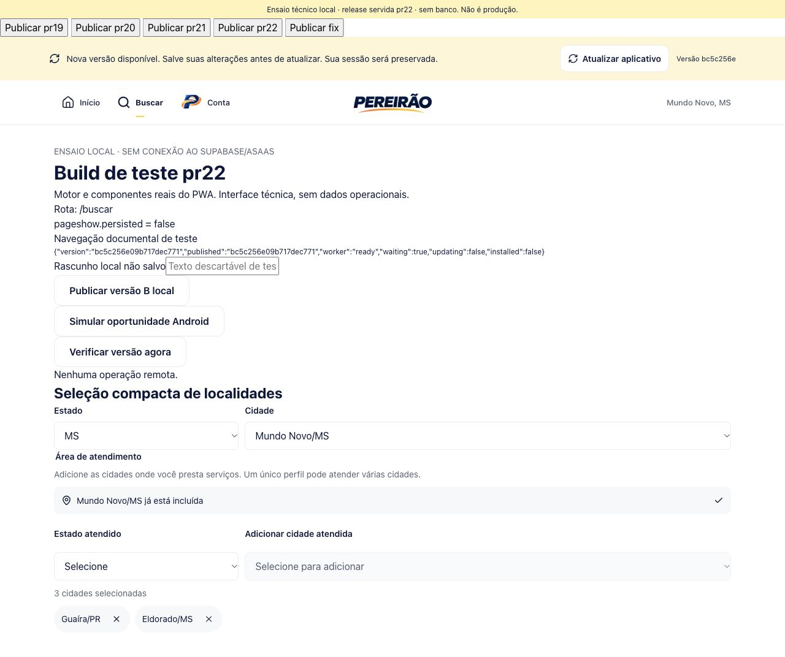
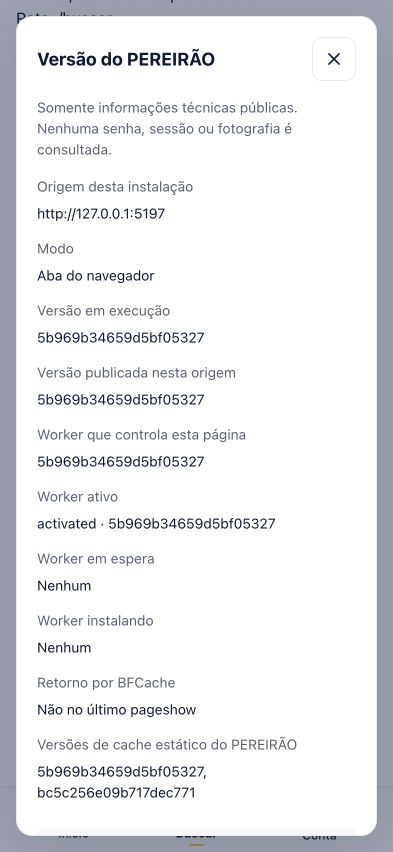
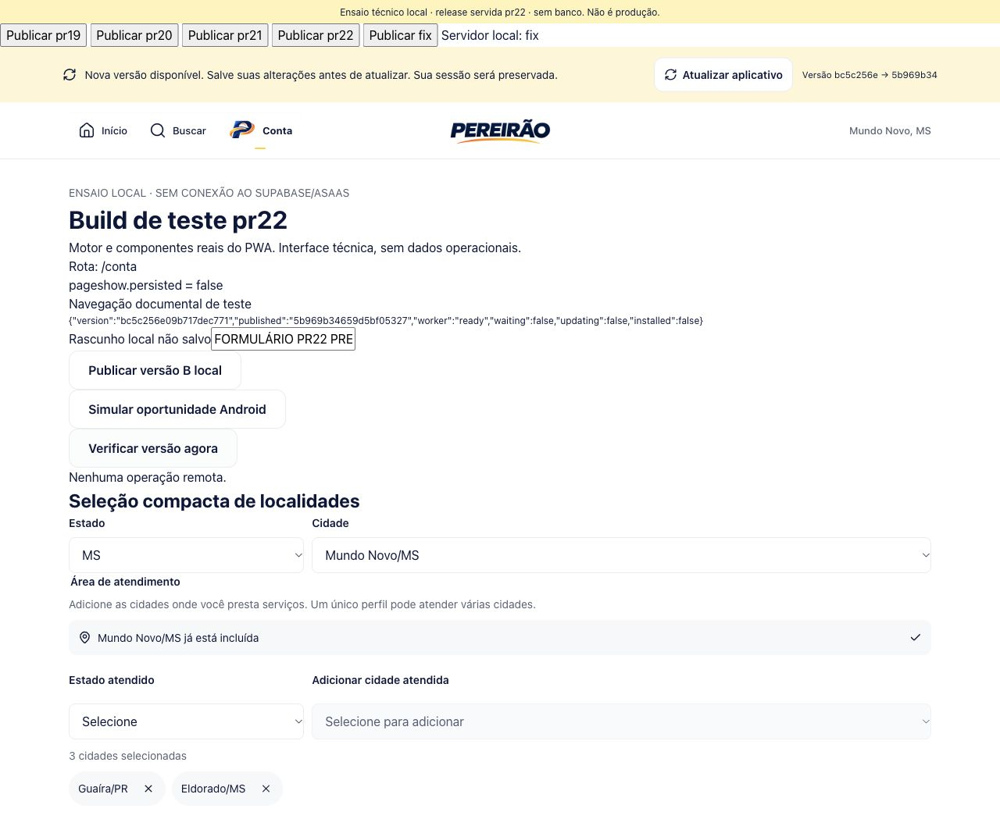

Produção verificada em 2b33b3b0c36a3f441c5dbc58e05bb75bc08f0a7a, READY. Branch da correção: fix/pwa-legacy-upgrade.
O defeito foi reproduzido. A correção está preparada para revisão, sem merge ou publicação de produção. Não declaramos homologação física de iPhone/Android nem resolução universal do relato.
No Chrome existente, o worker #487 estava ativo, recebido em 21/11/2026 às 16:06:16 (America/Campo_Grande), e #488 aguardava ativação, recebido às 16:30:08. A aba mostrava a mensagem anterior ao PR22 (“Salve suas alterações antes de recarregar”). A nova aba mostrava o prefixo de build a80fb7de. A versão exata do JavaScript da aba antiga não pode ser afirmada: ela não implementava essa identificação.
O botão normal do aplicativo antigo concluiu uma atualização explícita em produção: #488 ficou ativo e a sessão autenticada continuou disponível. Não foram usados skipWaiting, unregister, bypass ou limpeza pelo DevTools. A inspeção do DevTools foi somente leitura.
HTML, version.json e sw.js concordam no hash a80fb7def4efc4cf5bf6. Todos os recursos consultados retornaram 200. Não há evidência de HTML vencido na rede; HIT no CDN, isoladamente, não significa build incorreto.
| Recurso | Cache-Control real |
|---|---|
| / e /conta (HTML) | no-store |
| /version.json e /sw.js | no-store |
| /manifest.webmanifest | no-cache; start_url na Home |
| JS e CSS com hash | public, max-age=31536000, immutable |
Permanece a proteção contra loops e perda de edições. Caches antigos podem coexistir enquanto necessários a outras abas; essa coexistência não autoriza limpá-los indiscriminadamente. Nenhuma alteração de RLS, schema, financeiro, Auth ou domínios.
| Ensaio | Resultado | Ambiente |
|---|---|---|
| Produção READY/commit/headers | Aprovado | Vercel + GETs reais |
| Worker antigo/waiting e atualização explícita | Comprovado; sessão preservada | Chrome real de desktop existente |
| PR19 → PR20 → PR21 → PR22 | Sequência executada sem limpar storage; versões antigas exigiram confirmação | Chromium local, SW e fontes históricas reais |
| PR22 atual com worker waiting | Defeito reproduzido; correção alinhou página/publicação/worker | Chromium local |
| Botão antigo após outra aba ativar o worker | Ponte concluiu migração para o build corrigido | Chromium local com runtime PR21 real |
| Formulário PR22 durante atualização por outra aba | Texto preservado | Chromium local com dados sintéticos |
| Regra final de adiamento por formulário privado legado | Aprovada: não ativa globalmente, não navega privado; permite controlador novo que preserva edições | Testes automatizados com MessageChannel; ensaio combinado de navegador desta regra final pendente |
| Retorno e histórico | Build corrigido permaneceu após migração; BFCache persisted=true real não comprovado | Chromium local + teste automatizado do evento persisted |
| Typecheck, build e testes | 466 testes / 40 arquivos aprovados; baseline main: 444 | Local |
| SQL/RLS | 385 verificações aprovadas | PostgreSQL 17 descartável nativo, sem Docker |
| Diagnóstico responsivo | 320/393/1280 sem overflow; 393×852 incluído | Emulação Chromium |
| iPhone/Android físicos, abertura pelo ícone e suspensão do SO | Pendentes | Não executados nesta sessão |
Supabase exclusivo yazdjiwaksamizrbqewq: 12 migrações, seis categorias e sete cidades ativas. Menus nativos verificados em produção: Eldorado, Iguatemi, Itaquiraí, Mundo Novo e Naviraí (MS); Guaíra e Terra Roxa (PR). A troca de UF filtra a cidade sem exigir digitação.
Na sessão legítima do Chrome, o rascunho técnico 2f47ee53-719a-4aa8-b64c-0acf78874917 recebeu Elétrica e Pintura pela interface. A consulta somente de leitura confirmou ambos os vínculos, e reabrir a edição recuperou as escolhas. Depois, elas foram removidas pela própria interface, restaurando o conjunto inicial vazio. A principal continuou Climatização, origem Mundo Novo/MS e status draft. O updated_at do rascunho técnico foi atualizado pelas duas gravações; não afirmamos identidade binária desse registro.
Os outros dois negócios mantiveram seus fingerprints. Permanecem três negócios draft, três áreas, uma foto de portfólio, zero serviços, zero publicações e zero períodos gratuitos iniciados. Nenhuma conta ou negócio novo foi criado. O formulário de criação chegou à revisão com múltiplas especialidades e Guaíra/PR sem submeter um quarto negócio; persistência foi homologada pela edição do técnico preexistente.
API anônima real: somente GET, RPC de busca 200, catálogo sete cidades/seis categorias e especialidades disponíveis. Busca pública retornou zero negócios, coerente com todos em draft. Não foram criadas cobranças nem realizadas operações Asaas; Pix permanece desativado.
HTTP · Resumo · GETs públicos · Persistência · Integridade final



PR, CI e Preview em acompanhamento. Sem merge automático.